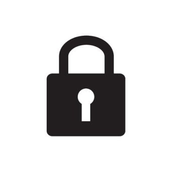

1. Trademark Protection
Protect your brand identity in Korea.
2. Our Firm
- Over 10 years of exclusive focus on trademark and copyright enforcement.
- Successfully shut down hundreds of counterfeit sales platforms in Korea.
- Offers full one-stop service: investigation, evidence collection, and litigation.
- Skilled professional staff work seamlessly with attorneys.
- Trusted by many global brands.

3. Why Choose Us
- No legal fees charged to clients. Because counterfeit sales platforms are numerous, budgeting legal fees for every case is unrealistic. We cover all litigation costs and only seek compensation from counterfeiters. Even if compensation isn’t received, we bear the risk—never the client.
- Expertise with Chinese counterfeiters (who run 50%+ of illegal platforms).
- We specialize in freezing settlement funds before they are paid out. This requires legal know-how, persuasion of judges, and coordination with Korean marketplaces. Our firm has a proven track record in all of the above.
4. Key Results
- Arc’teryx (Canada): Shut down ~200 sites in 3 years.
- ECCO (Sweden): Shut down ~300 sites in 5 years.
- DAIWA (Japan): Shut down ~500 sites in 7 years.
- Within the first year of engagement, we typically shut down 90% of all counterfeit activity.

5. Common Misunderstandings
- “The headquarters is already handling it.” Only Korean-licensed attorneys can file lawsuits in Korea. HQ cannot directly litigate and must engage a local firm.
- “A pilot case or two is enough.” To be effective, legal action must be comprehensive over 6–12 months. Hiring traditional law firms for hundreds of cases is financially impossible. Our firm has the experience and financial capacity to handle this scale.
- “There are no counterfeits online.” Counterfeiters no longer display logos; they use deceptive tactics to avoid detection. Just because you don’t see it doesn’t mean it isn’t happening.
- “We use monitoring services.” Identifying counterfeiters is not enough. Only legal penalties stop repeat offenses. Without legal pressure, takedowns are temporary and endlessly repeated.
6. Our Process
- Send us a signed power of attorney for the Korean court (revocable at any time).
- We immediately assign a specialist to investigate counterfeit listings.
- Based on findings, we take the most effective actions: warning, negotiation, or litigation.
- Clients receive biweekly or monthly reports with detailed updates.
7. Final Note
Let us work without burdening you. If we do not meet your expectations, you can cancel anytime.
To date, no client has ever revoked our mandate.
We invite you to test the capabilities of JeongSang Law Office.